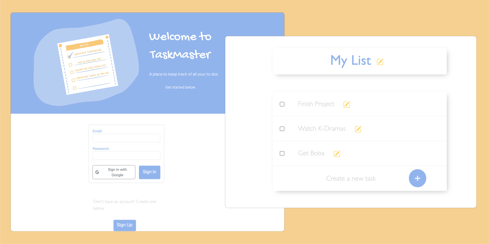

Taskmaster
App that allows users to create an account/sign in and create to do lists, edit tasks, and check off completed tasks. Lists are stored in PostgreSQL database.
JavaScript • EJS • Node • Express • PostgreSQL

bookfinder
React app that allows users to search for books and sort by newest/oldest. Users can view extended details at the click of a button, which allows them to see additional details about the selected title.
Features currently in progress: User authentication, ability to add books to different shelves
JavaScript • React • Node • Google Books API